Research
My research focuses on computational fabrication, particularly in
additive manufacturing and
textile-based fabrication. I develop computational
and robotic methods that bridge the gap between digital design and
physical fabrication.
For additive manufacturing, I explore multi-axis
slicing algorithms and robotic motion planning to enable freeform
fabrication beyond conventional layering. For
textile fabrication, I develop knitting and weaving
algorithms to build freeform sensing interfaces using functional
fibers, advancing robotic skins capable of multimodal perception and
intuitive interaction. By combining geometry computing, artificial
intelligence, and robotic control, my work seeks to create a unified
framework that can translate digital designs into precise, functional
physical forms.
Publications
*: co-first author, †: corresponding author(s)
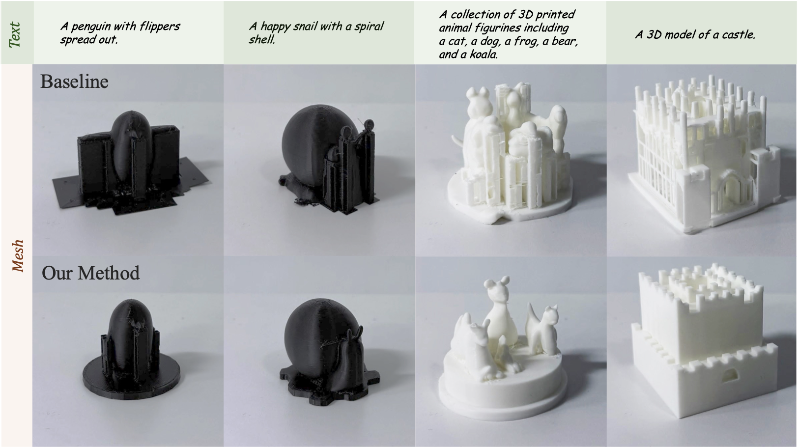
From Prompts to Printable Models: Support-Effective 3D Generation via Offset Direct Preference Optimization
Chenming Wu, Xiaofan Li, Chengkai Dai†
ArXiv Preprint
[paper]
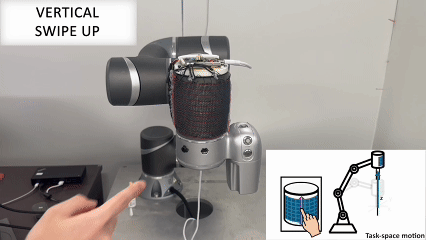
Towards Intuitive Human-Robot Interaction through Embodied
Gesture-Driven Control with Woven Tactile Skins
ChunPing Lam, Xiangjia Chen, Chenming Wu, Hao Chen, Binzhi Sun,
Guoxin Fang, Charlie C.L. Wang,
Chengkai Dai†, Yeung Yam
ArXiv Preprint
[paper]
[video]
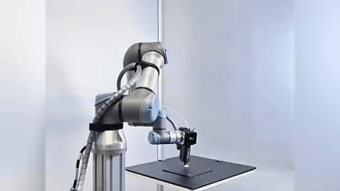
INF-3DP: Implicit Neural Fields for Collision-Free Multi-Axis
3D Printing
Jiasheng Qu, Zhuo Huang, Dezhao Guo, Hailin Sun, Aoran Lyu,
Chengkai Dai, Yeung Yam, Guoxin Fang
ACM Transactions on Graphics (SIGGRAPH Asia), 2025
[project]
[paper]
[video]
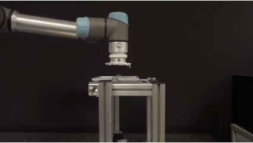
Curve-based Slicer for Multi-Axis DLP Printing
Chengkai Dai*, Tao Liu*,
Dezhao Guo, Binzhi Sun, Guoxin Fang, Yeung Yam, Charlie C.L.
Wang
ACM Transactions on Graphics (SIGGRAPH Asia), 2025
[project]
[paper]
[video]
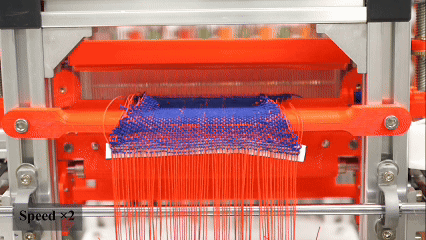
Computer-Controlled 3D Surface Weaving
Xiangjia Chen, Lip M. Lai, Zishun Liu,
Chengkai Dai, Isaac C.W. Leung, Charlie C.L.
Wang, Yeung Yam
Robotics and Computer-Integrated Manufacturing, 2024
[paper]
[video]
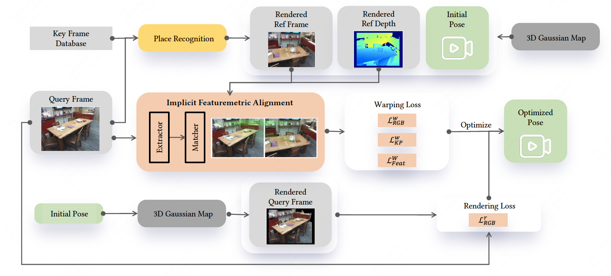
GauLoc: 3D Gaussian Splatting-based Camera Relocalization
Zhe Xin, Chengkai Dai, Ying Li, Chenming Wu
Computer Graphics Forum (Pacific Graphics), 2024
[paper]
[code]
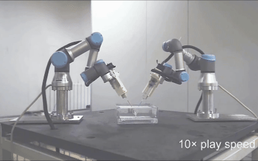
A Multi-Axis Robot-Based Bioprinting System Supporting Natural
Cell Function Preservation and Cardiac Tissue Fabrication
Zeyu Zhang*, Chenming Wu*,
Chengkai Dai*, Qingqing Shi, Guoxin
Fang, Dongfang Xie, Xiangjie Zhao, Yong-Jin Liu, Charlie C.L.
Wang, Xiu-Jie Wang
Bioactive Materials, 2022
[paper]
[video]
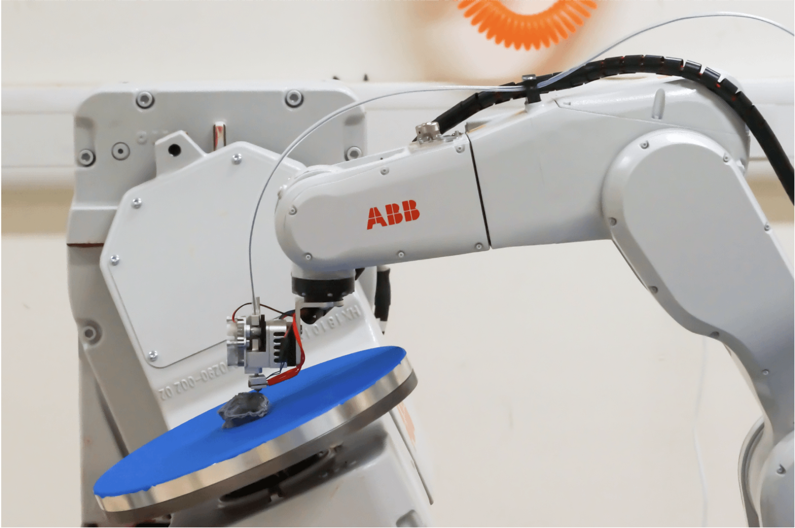
Planning Jerk-Optimized Trajectory with Discrete Time
Constraints for Redundant Robots
Chengkai Dai, Sylvain Lefebvre, Kai-Ming Yu, Jo
MP Geraedts, Charlie C.L. Wang
IEEE Transactions on Automation Science and Engineering
(T-ASE), 2020
[paper]
[video]

General Support-Effective Decomposition for Multi-Directional
3D Printing
Chenming Wu, Chengkai Dai, Guoxin Fang, Yong-Jin
Liu, Charlie C.L. Wang
IEEE Transactions on Automation Science and Engineering
(T-ASE), 2019
[paper]
[code]

Energy-Efficient Coverage Path Planning for General Terrain
Surfaces
Chenming Wu, Chengkai Dai, Xiaoxi Gong, Yong-Jin
Liu, Jun Wang, Xianfeng David Gu, Charlie C.L. Wang
IEEE Robotics and Automation Letters (RA-L), 2019
[paper]
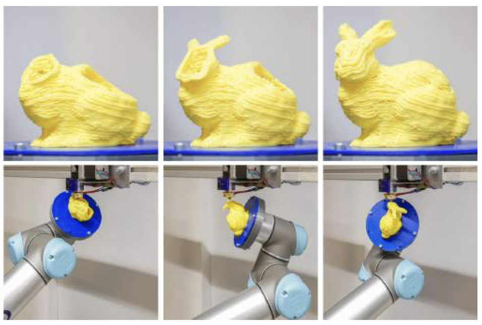
Support-Free Volume Printing by Multi-Axis Motion
Chengkai Dai, Charlie C.L. Wang, Chenming Wu,
Sylvain Lefebvre, Guoxin Fang, Yong-Jin Liu
ACM Transactions on Graphics (SIGGRAPH), 2018
[paper]
[video]
[code]
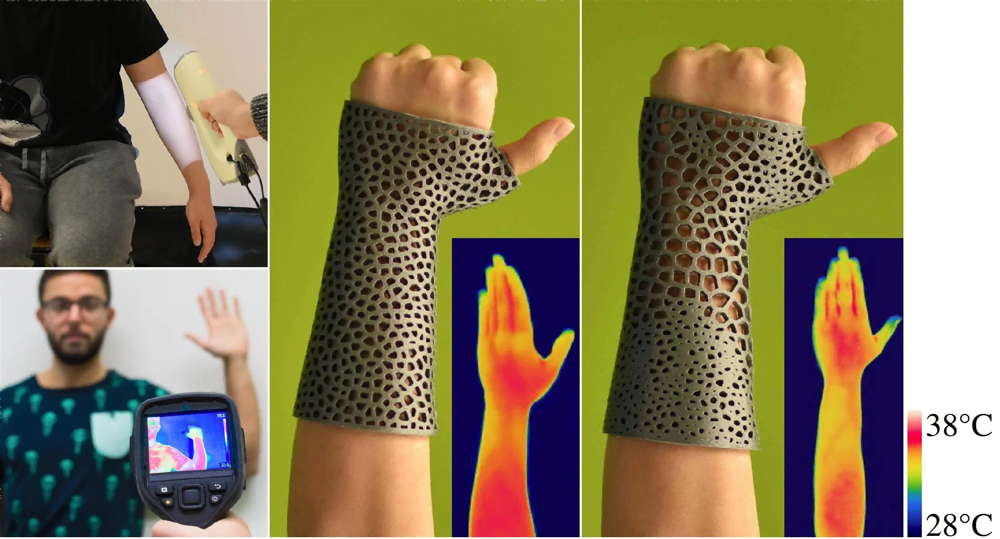
Thermal-Comfort Design of Personalized Casts
Xiaoting Zhang, Guoxin Fang, Chengkai Dai, Jouke
Verlinden, Jun Wu, Emily Whiting, Charlie C.L. Wang
UIST, 2017
[project]
[paper]
[video]
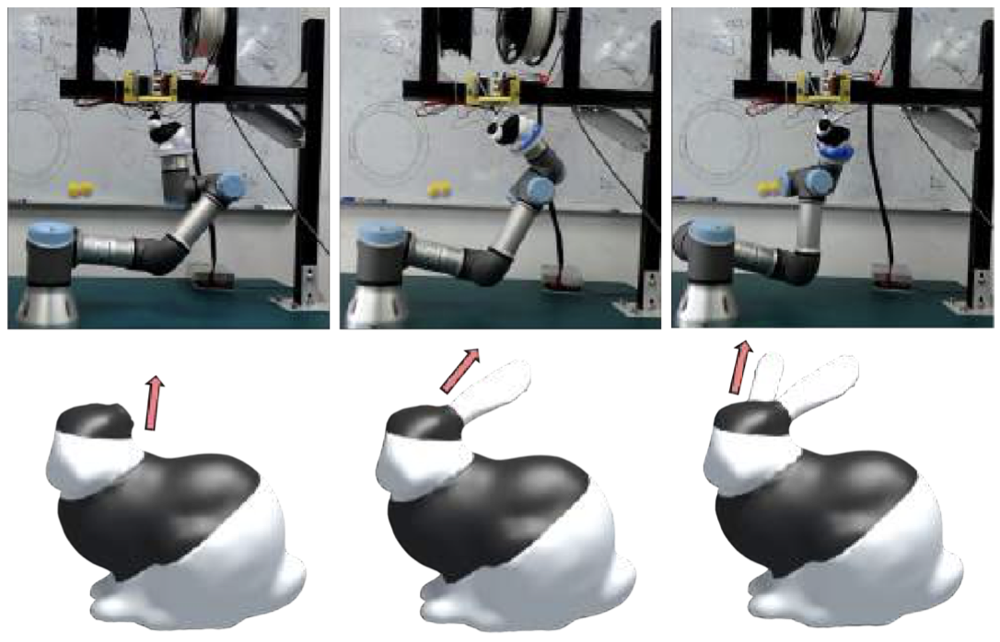
RoboFDM: A Robotic System for Support-Free Fabrication using
FDM
Chenming Wu*, Chengkai Dai*, Guoxin Fang, Yong-Jin Liu, Charlie C.L. Wang
ICRA, 2017
[paper]
[video]
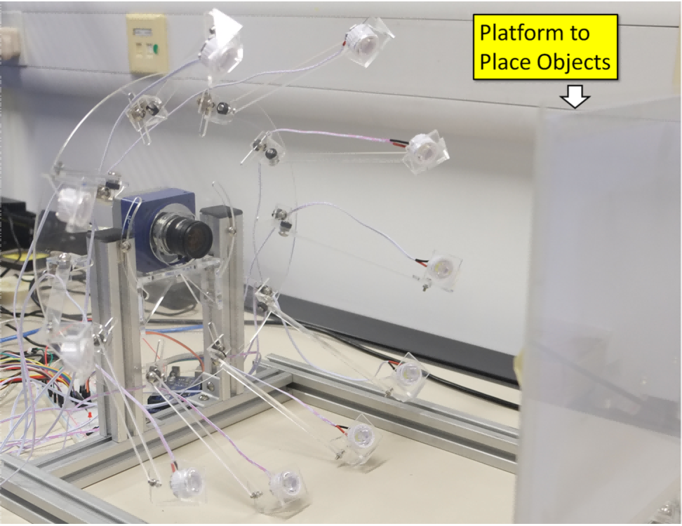
Photometric Stereo with Near Point Lighting: A Solution by Mesh
Deformation
Wuyuan Xie, Chengkai Dai, Charlie C.L. Wang
CVPR, 2015
[paper]
[video]
Awards and Honors
- Bronze Prize of 50th International Exhibition of Inventions Geneva, 2025
- MEDTECH award of 3D Pioneers Challenge, 2022 [press]
Academic Service
Conference Reviewer: SIGGRAPH (Asia), Eurographics, AAAI, CVPR, ICRA, IROS, etc.
Journal Reviewer: ACM Transactions on Graphics (TOG), IEEE Transactions on Automation Science and Engineering (T-ASE), IEEE Robotics and Automation Letters (RA-L), etc.